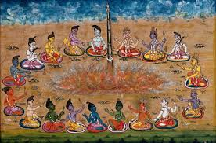

Introduction
The Vedic Period marks the composition of the sacred Vedas, the rise of early Hinduism, and the establishment of Vedic culture across northern India.
A Vedic yajna (fire sacrifice) as described in ancient texts
Sacred Texts
The four Vedas—Rigveda, Samaveda, Yajurveda, and Atharvaveda—form the oldest layer of Sanskrit literature.
Society & Culture
Vedic society was organized into tribes, with a pastoral economy and rituals central to daily life.